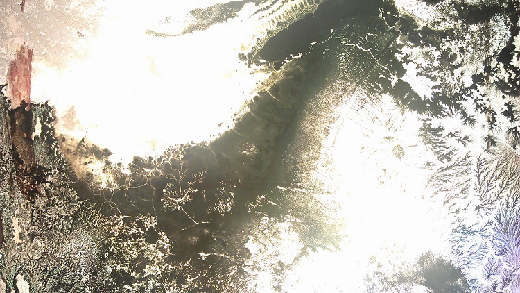

The installation was created in the frame of the course State Of Matter at the University of Arts in Bremen. In that course, as the name already implies, the behaviors and structures of physical material under different states of matter were to be explored and experimented with.
Die Erde ist eine Scheibe connects different scales of nature in a single room, pointing at the constancy of repetitive patterns in nature and how fractal patterns can be recognized at virtually all scales. Only by really sensing (in this case seeing and feeling) these phenomena we have a chance to incorporate the laws of nature.
Colorful salt crystals were bred on a glass plate, which, during projection, rotates around its concentric center. A simple overhead projector is used to both illuminate the glass plate and the crystals, as well as to lead the light through the plate to cast an image onto the wall. As the light passes the crystalline landscapes, it reflects this microscopic world and transfers it into a broad-frame projection. The outcome is a scenic image that shows a mixture of delicately veined structures and well-constructed shapes along with blurred formations and undefined assemblages. The overall composition can easily be associated with vast, distant landscapes as they might be seen from above.